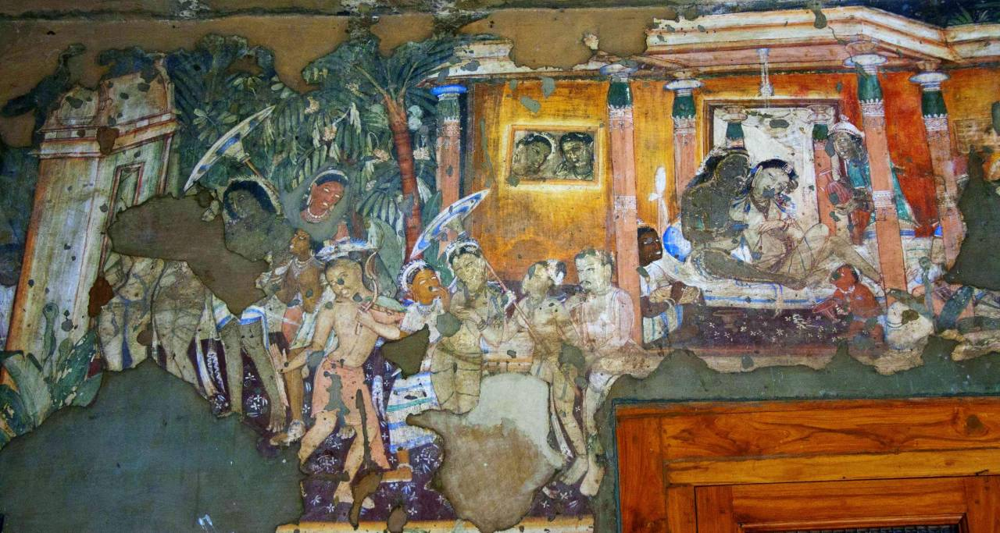
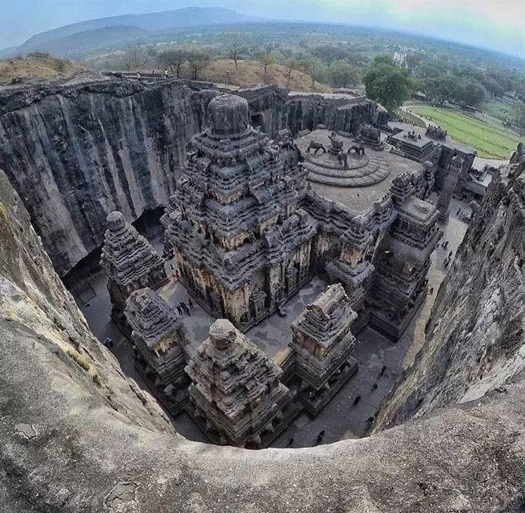

Ajanta & Ellora: Stone Masterpieces
Hidden within the rugged Sahyadri Hills of Maharashtra lie the Ajanta and Ellora Caves, two UNESCO World Heritage sites that redefine the limits of human patience and creativity. These are not merely caves, but grand monasteries and temples carved directly into the heart of solid basalt cliffs. For centuries, these masterpieces lay forgotten by the world—cloaked in thick jungle—until a British hunting party "rediscovered" the Ajanta caves in 1819.
The Ajanta Caves are a sanctuary of color and devotion, famous for their 2,000-year-old Buddhist frescoes that still glow with vibrant pigments made from crushed minerals. Just a few hours away, the Ellora Caves showcase a monumental shift toward architectural power. Here, the world’s largest monolithic structure—the Kailasa Temple—stands as a testament to an era where entire mountains were hollowed out from the top down. Together, these sites offer a spiritual journey through the evolution of Buddhism, Hinduism, and Jainism, frozen in stone for over a millennium.

🏛️ Ajanta: The Canvas of Antiquity
Culture: Ajanta is the world’s premier gallery of ancient art. The murals depict the Jataka Tales (lives of the Buddha) and offer a rare glimpse into the fashion, jewelry, and daily life of ancient Indian royalty and commoners.
Environment: The caves are carved into a panoramic, horseshoe-shaped cliff overlooking the Waghur River. The setting is dramatic and lush, especially during the rains when waterfalls cascade over the cave entrances.
History: Dating from the 2nd century BCE to the 5th century CE, these 30 caves were exclusively Buddhist monasteries (viharas) and prayer halls (chaityas). They served as a retreat for monks during the monsoon season.
🗿 The Ellora Caves: The Monolith of Power
Environment: Unlike the hidden cliffs of Ajanta, Ellora is spread along a 2km stretch of a basaltic hill. The structures are more vertical and massive, focusing on high-relief sculpture and structural engineering.
History: Carved between the 6th and 10th centuries CE, Ellora is unique because it features 34 caves belonging to three different religions: Buddhism (Caves 1–12), Hinduism (Caves 13–29), and Jainism (Caves 30–34), all co-existing peacefully.
Culture: The culture here is one of religious harmony and monumental ambition. The Kailasa Temple (Cave 16) is the star—it was carved from a single rock, starting from the top and working down, removing 200,000 tons of stone without a single mistake.
📸 Iconic Caves

Jataka Tales

The Magnificent Kailasa Temple
🍛 Local Flavors
Naan Qalia: A spicy meat curry (Qalia) served with a heavy traditional leavened bread (Naan), native to Aurangabad.

Naan Qalia